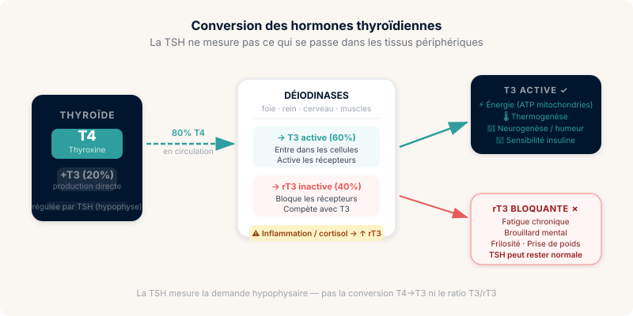
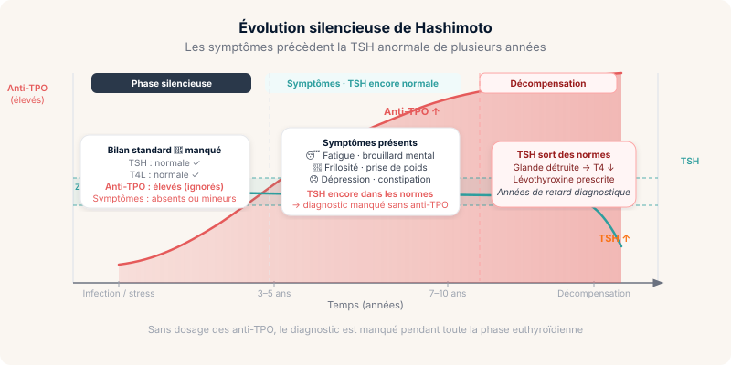
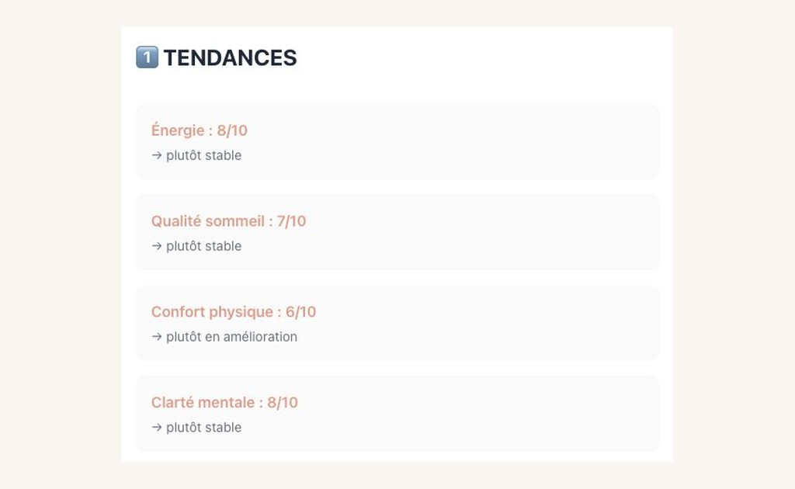

Thyroïde et fatigue : quand les examens sont « normaux » mais que le corps dit non
TSH normale. T4 normale. Ton médecin te rassure. Pourtant tu es épuisé(e), tu as froid, tu grossis sans raison, ton cerveau tourne au ralenti. Ce décalage entre les chiffres et le vécu a une explication physiologique. La voici.

🧭 L'essentiel en 30 secondes
- Une TSH et une T4L normales n'excluent pas un problème thyroïdien — la conversion T4→T3 peut être insuffisante sans que le bilan standard le détecte.
- Hashimoto peut progresser silencieusement pendant des années avec des anticorps anti-TPO élevés et une TSH encore normale — c'est la phase euthyroïdienne.
- Le Covid long est associé à une élévation des anti-TPO chez des personnes sans antécédent thyroïdien — une surveillance à 6-12 mois post-infection peut être justifiée.
La thyroïde en 3 minutes : ce que font vraiment ces hormones
La thyroïde produit deux hormones principales : la T4 (thyroxine), forme de stockage peu active directement, et la T3 (triiodothyronine), forme active qui entre dans les cellules et régule le métabolisme.
La T4 doit être convertie en T3 dans les tissus périphériques — foie, rein, cerveau — par des enzymes appelées déiodinases. C'est cette conversion qui est souvent défaillante, pas la production de T4.
En parallèle, il existe une T3 inverse (rT3), forme inactive qui entre en compétition avec la T3 pour occuper les récepteurs cellulaires. Un ratio T3/rT3 défavorable peut reproduire tous les symptômes d'hypothyroïdie avec une TSH normale.

Pourquoi la TSH seule est insuffisante
La TSH (Thyroid Stimulating Hormone) est produite par l'hypophyse. Elle reflète la demande du cerveau envers la thyroïde, pas l'état des cellules thyroïdiennes ni la conversion périphérique.
Une TSH normale peut coexister avec une T3 libre basse (mauvaise conversion T4→T3), une rT3 élevée (compétition sur les récepteurs), une résistance cellulaire aux hormones thyroïdiennes ou des anticorps anti-TPO élevés signant une thyroïdite de Hashimoto asymptomatique au bilan standard.
| Marqueur | Ce qu'il mesure | Prescrit en ville ? |
|---|---|---|
| TSH | Demande hypophysaire | ✅ Systématique |
| T4 libre | Forme de stockage circulante | ✅ Souvent |
| T3 libre | Forme active disponible | ⚠️ Rarement |
| T3 inverse (rT3) | Forme compétitrice inactive — recherche / médecine fonctionnelle | ❌ Non recommandé en routine |
| Anti-TPO | Autoimmunité (Hashimoto) | ⚠️ Si suspicion |
| Anti-Tg | Autoimmunité complémentaire | ❌ Rarement |
Le lien Covid long × thyroïde : un signal documenté
Plusieurs mécanismes relient le Covid long à la dysfonction thyroïdienne.
1. Thyroïdite subaiguë post-COVID
Des cas de thyroïdite de De Quervain (inflammation transitoire de la thyroïde) ont été documentés après infection au SARS-CoV-2. Symptômes : douleur cervicale, hyperthyroïdie transitoire suivie d'hypothyroïdie temporaire. La résolution est souvent spontanée mais le délai peut atteindre 6 à 12 mois.
2. Thyroïdite de Hashimoto déclenchée ou aggravée
L'infection virale peut agir comme déclencheur d'une autoimmunité latente. Une élévation des anti-TPO post-COVID a été rapportée dans plusieurs cohortes, même chez des personnes sans antécédent thyroïdien.
3. Dysfonction de la conversion T4→T3
L'inflammation systémique chronique — cytokines pro-inflammatoires, TNF-α, IL-6 — inhibe les déiodinases périphériques. Résultat : T4 normale, T3 basse, rT3 élevée. C'est le « syndrome de T3 basse » ou euthyroid sick syndrome — fréquemment observé dans les maladies inflammatoires chroniques, peu reconnu en pratique courante (cf. Fliers et al., 2015).
4. Impact hypothalamique
Le SARS-CoV-2 a un tropisme documenté pour le système nerveux central, incluant l'hypothalamus. Une dysrégulation de l'axe HPT (Hypothalamo-Hypophyso-Thyroïdien) peut produire une TSH inadaptée malgré une thyroïde anatomiquement saine.
Hashimoto : l'hypothyroïdie auto-immune qu'on diagnostique trop tard
La thyroïdite de Hashimoto est la cause la plus fréquente d'hypothyroïdie en Europe. Elle évolue silencieusement pendant des années avant que la TSH ne sorte des normes.
Pendant cette phase « euthyroïdienne » de Hashimoto : TSH normale ou limite haute, anti-TPO élevés (parfois très élevés), symptômes présents (fatigue, brouillard mental, frilosité, prise de poids, dépression, constipation), et aspect hétérogène du parenchyme thyroïdien à l'échographie.
Le problème : sans dosage des anticorps, le diagnostic est manqué. La TSH reste « normale » pendant des années pendant que la destruction auto-immune progresse.

Thyroïde et énergie : le mécanisme cellulaire
La T3 agit directement sur les mitochondries. Elle régule la synthèse des complexes de la chaîne respiratoire (production d'ATP), l'expression des UCP (uncoupling proteins) qui gèrent la thermogenèse, la sensibilité à l'insuline au niveau musculaire, et la neurogenèse ainsi que la plasticité synaptique.
Une T3 insuffisante au niveau cellulaire produit donc : fatigue, frilosité, prise de poids, brouillard cognitif, dépression, ralentissement digestif — exactement le tableau classique d'hypothyroïdie, même avec une TSH normale si la conversion est en cause.
Thyroïde × Surrénales : l'interaction critique
Ces deux axes ne fonctionnent pas en silo. Le cortisol module la conversion T4→T3 : un excès chronique de cortisol (stress chronique, inflammation) favorise la production de rT3 au détriment de la T3 active.
En pratique, une personne avec dysrégulation HPA et thyroïde fonctionnellement compromise peut avoir les deux bilans « normaux » mais une T3 tissulaire réellement insuffisante. C'est pourquoi surrénales et thyroïde sont toujours évaluées ensemble dans les approches intégratives.
Ce qu'il faut demander
Si ton bilan standard (TSH + T4L) est normal mais que les symptômes persistent, voici les marqueurs à discuter avec ton médecin ou un endocrinologue :
- TSH + T4 libre — le bilan de première intention dans la majorité des cas
- Anti-TPO + Anti-Tg — à demander si suspicion de Hashimoto (symptômes évocateurs, TSH en limite haute)
- T3 libre — selon le contexte clinique, si tableau discordant malgré T4 normale
- Échographie thyroïdienne — si les anticorps sont positifs ou si TSH en limite haute
⚠️ La rT3 n'est pas recommandée en routine pour explorer une hypothyroïdie. Elle reste un marqueur de recherche ou de médecine fonctionnelle, à discuter avec un endocrinologue dans un contexte très spécifique.
Ce que Boussole peut documenter
Les symptômes thyroïdiens fluctuent moins vite que les symptômes dysautonomiques. Sur Boussole, ce sont les tendances longues — 4 à 8 semaines — qui sont informatives. Ce qui peut être significatif :
- Score énergie systématiquement bas le matin avec amélioration très lente dans la journée
- Score clarté mentale chroniquement bas sans variation notable
- Score sommeil dégradé de façon persistante (hypersomnie non récupératrice typique de l'hypothyroïdie)
- Score confort physique bas avec frilosité documentée (élément clinique à noter dans la zone de texte libre)

Questions fréquentes
Peut-on avoir Hashimoto sans symptômes ?
Oui. Pendant des années, la destruction auto-immune progresse silencieusement avec des anticorps anti-TPO élevés et une TSH encore normale. C'est la phase dite « euthyroïdienne de Hashimoto » — les symptômes apparaissent quand la glande n'arrive plus à compenser.
Pourquoi mon médecin ne prescrit-il pas la T3 libre ?
Le bilan standard remboursé en France inclut TSH + T4L. La T3L n'est recommandée que si la TSH est anormale ou si une pathologie hypophysaire est suspectée. Pourtant dans les contextes de fatigue chronique ou de Covid long, la conversion T4→T3 peut être défaillante avec une TSH normale. Il faut souvent le demander explicitement, ou consulter un endocrinologue.
La rT3 est-elle dosable en France ?
Techniquement oui, mais elle n'est quasiment jamais prescrite en médecine de ville et n'est pas remboursée. Elle reste un marqueur de recherche ou de médecine fonctionnelle. Si tu suspectes un problème de conversion, commence par la T3L — c'est plus accessible et déjà très informatif.
Le Covid long peut-il déclencher un Hashimoto ?
C'est un signal documenté : plusieurs études post-COVID montrent une élévation des anti-TPO chez des personnes sans antécédent thyroïdien. Le mécanisme probable est un mimétisme moléculaire ou une activation d'une autoimmunité latente par l'infection virale. La surveillance thyroïdienne à 6–12 mois post-infection est justifiée si des symptômes évocateurs apparaissent.
Peut-on soutenir la conversion T4→T3 sans ordonnance ?
La T3 (liothyronine) et la T4 (lévothyroxine) sont des médicaments sur ordonnance. En micronutrition, certains éléments soutiennent la conversion T4→T3 : le sélénium (cofacteur des déiodinases), le zinc, l'iode, la vitamine D. Mais ils ne remplacent pas un traitement hormonal si le déficit est avéré. Toujours en discuter avec un professionnel de santé avant toute substitution.
Sources
- Muller I et al., Long-term outcome of thyroid abnormalities in patients with severe Covid-19. Eur Thyroid J. 2023. Muller et al., 2023 — PubMed · DOI
- Popescu M et al., The New Entity of Subacute Thyroiditis amid the COVID-19 Pandemic: From Infection to Vaccine. Diagnostics (Basel). 2022. Popescu et al., 2022 — PubMed · DOI
- Bianco AC, Kim BW. Deiodinases: implications of the local control of thyroid hormone action. J Clin Invest. 2006. Bianco & Kim, 2006 — PubMed · DOI
- Fliers E et al., Thyroid function in critically ill patients. Lancet Diabetes Endocrinol. 2015. Fliers et al., 2015 — PubMed · DOI
- Dentice M et al., The FoxO3/type 2 deiodinase pathway is required for normal mouse myogenesis and muscle regeneration. J Clin Invest. 2010. Dentice et al., 2010 — PubMed · DOI